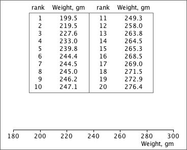

Displaying outliers
Most box plots display values more than 1.5 times the interquartile range beyond the quartiles as separate crosses. The 'whiskers' should only extend to the most extreme values within this range.
The following exercise is similar to the one above, but you must take more care to position the ends of the whiskers to ensure that 'outliers' are separately displayed as crosses.
Repeat with a few different data sets until you can consistently draw the correct box plot.
The data set below may contain an outlier. Draw a box plot against the axes with any outliers separately marked.
